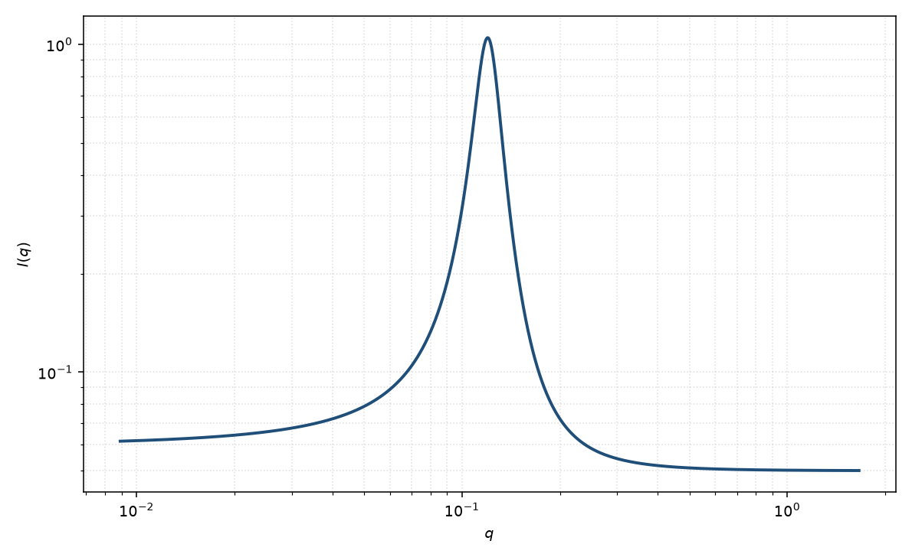

洛伦兹峰
peak Lorentz
适用场景
相关峰带明显洛伦兹尾（指数关联的畴或寿命）时，用洛伦兹峰。比高斯更“瘦顶宽尾”。适合液体峰、短程有序的无定形相关峰。
非常宽、峰位可移到 $q=0$ 附近时，宽峰或 Teubner–Strey 更合适。层状高阶峰应改用堆叠模型。
物理图像
洛伦兹线形对应指数衰减的相干：$I\sim [1+((q-q_0)/\Gamma)^2]^{-1}$。半高宽由 $\Gamma$ 决定，峰位仍给 $d=2\pi/q_0$。
粉末平均把三维峰变成 $q$ 上的线；取向样品应看弧向宽度，不要把 Lorentz 尾当成额外本底。
示意图

核心公式
出发点
本式是经验峰形。洛伦兹线对应实空间的指数相干 $\mathrm{e}^{-r/\xi}\mathrm{e}^{i q_0 r}$（一维），比高斯更瘦顶、更重尾。峰位仍经验地读 $d=2\pi/q_0$，半高半宽 $\Gamma$ 与关联长度 $\xi\sim 1/\Gamma$ 同量级。
推导
指数 $\mathrm{e}^{-\Gamma\lvert r\rvert}$ 的 Fourier 变换是洛伦兹 $2\Gamma/(\Gamma^2+\omega^2)$。把频率原点移到 $q_0$，并归一到峰高 $A$：
$$I(q)=\frac{A}{1+[(q-q_0)/\Gamma]^2}+B.$$$\Gamma$ 为 HWHM：当 $\lvert q-q_0\rvert=\Gamma$ 时强度降到峰值一半。$q_0=0$ 时回到中心在原点的洛伦兹，但本页的峰通常 $q_0\neq 0$，与 Ornstein–Zernike 的 $1/(1+\xi^2 q^2)$ 不是同一个函数（后者在 $q=0$ 最大）。
低 $q$ 与渐近
翼上 $I\sim A\Gamma^2/(q-q_0)^2$，即离开峰后 $\sim q^{-2}$，比高斯慢、比 Porod $q^{-4}$ 仍慢。低 $q$ 若远离峰，强度接近 $A/(1+(q_0/\Gamma)^2)+B$，不是 Guinier 展开。尾与本底 $B$ 强相关，须有足够宽的 $q$ 翼。
参数表
| 参数 | 符号 | 含义 | 单位 | 典型范围 |
|---|---|---|---|---|
| 峰位 | $q_0$ | 峰中心 | Å$^{-1}$ | 由重复距离决定 |
| 半宽 | $\Gamma$ | HWHM | Å$^{-1}$ | 含关联长度与分辨率 |
| 幅度 | $A$ | 峰高 | 与强度单位一致 | 与有序程度相关 |
| 标度 / 本底 | $\mathrm{scale}$, $B$ | 前置因子与常数本底 | 与强度单位一致 | 实验相关 |
拟合注意
取向：粉末 Lorentz 峰不给出 $\theta,\phi$。弧向若也是洛伦兹，那是取向分布，不是本页的径向 $\Gamma$。
多分散间距与分辨率都加宽 $\Gamma$，与畴大小简并。磁性峰的 $\Gamma$ 反映磁关联长度。
可辨识性：洛伦兹尾与本底 $B$ 强相关，须有足够宽的 $q$ 翼。高斯与洛伦兹在只覆盖半高宽时几乎无法分辨。
相近模型
参考文献
- Guinier, A.; Fournet, G. Small-Angle Scattering of X-rays. Wiley: New York, 1955.
- Warren, B. E. X-ray Diffraction. Addison-Wesley: Reading, 1969.